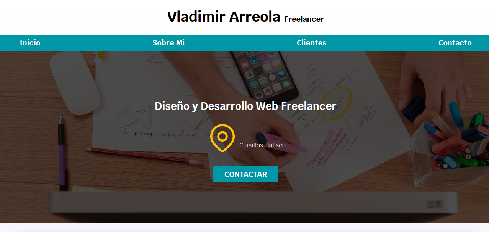
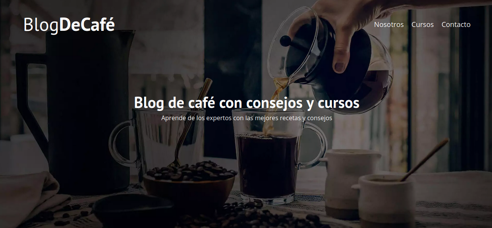
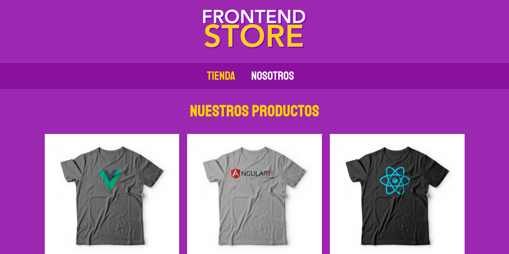
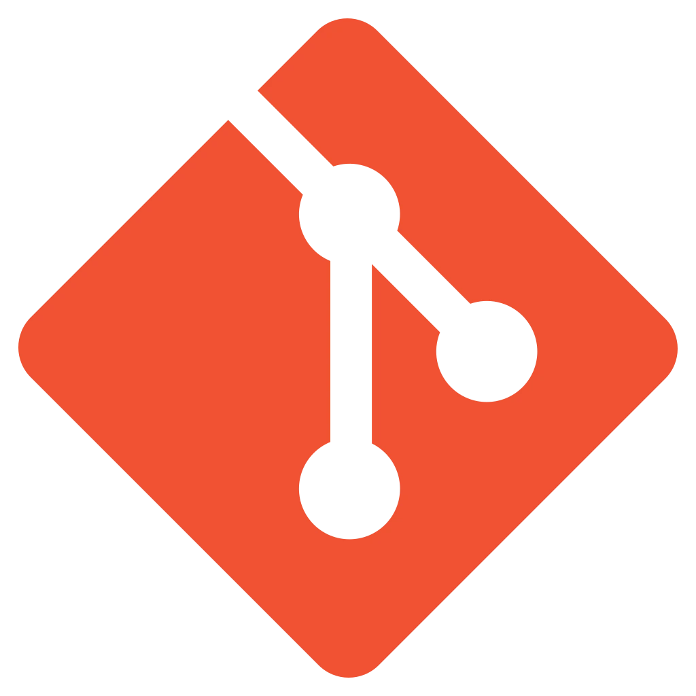
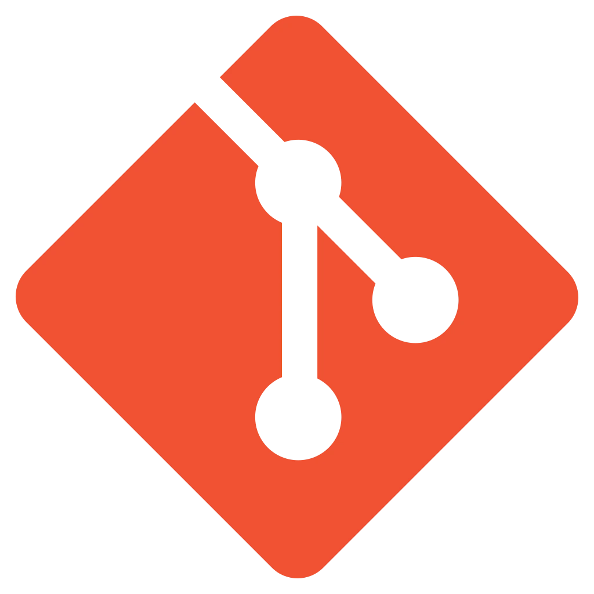

Portafolio

See project
Go to repo
A static page for practice HTML5 and CSS3 concepts like: flex, grid and Responsive Web Design

See project
Go to repo
A simple Coffee Blog and static site made to keep practicing Web Responsive Design, only using HTML5 and CSS3

See project
Go to repo
A static e-commerce, where you can see different types of products. Made only with HTML5 and CSS3.

 
